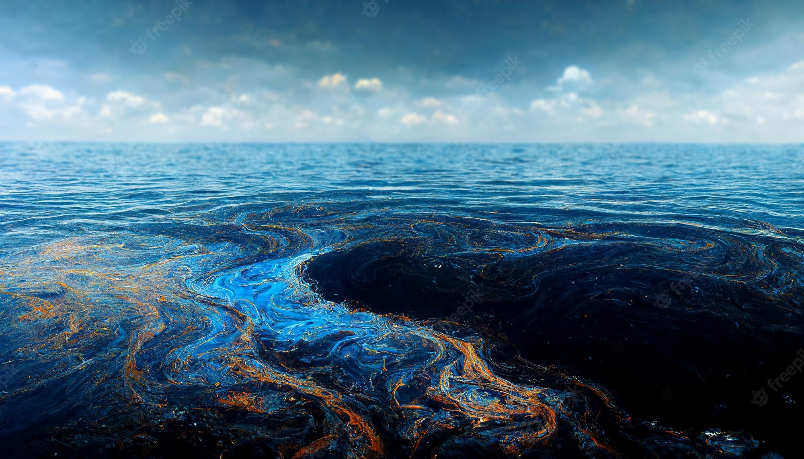

Devido a gravidade dos acidentes envolvendo vazamentos de petróleo em todo o mundo, foram sendo desenvolvidas, ao longo do tempo, diversas tecnologias de remediação a fim de reduzir os impactos ambientas nos ecossistemas costeiros gerados pelos vazamentos de petróleo. Uma delas é o tratamento biológico através do uso de micro-organismos. Para o lixo na praia,a solução é fornecer incentivos para que as pessoas não joguem coisas fora."
Nas técnicas de biorremediação para degradação e/ou imobilização dos contaminantes em água, são utilizados microrganismos de ocorrência natural (nativos) ou cultivados. Normalmente são utilizados nestes casos bactérias, fungos filamentosos e leveduras. Dentre os microrganismos citados, as bactérias são as mais utilizadas e por isso são consideradas elemento principal em trabalhos envolvendo a biodegradação de contaminantes. Pode-se definir as bactérias utilizadas em biorremediação como qualquer classe de microrganismos unicelulares, normalmente agregados em colônias, capazes de viver em diversos compartimentos ambientais, tendo grande importância devido aos seus efeitos bioquímicos e por serem capazes de destruírem ou transformarem contaminantes potencialmente perigosos em compostos menos perigosos a saúde dos seres humanos e ao meio ambiente. Uma das mais utilizadas é a Alcanivorax borkumensis (imagem ao lado).
Arraste o mouse por cima da imagem da água contaminada para ver o que o processo de biorremediação pode fazer no longo prazo. Esse processo não é instantâneo, mas pode causar grande impacto. Fica um alerta também sobre a necessidade de utilização de energias mais limpas, ao invés do petróleo, começando com a redução do consumo desse hidrocarboneto na sociedade e, promovendo a médio e longo prazo um combate ao derramamento de petróleo no mar, e que, por vez, irá auxiliar na conservação dos ecossistemas costeiros e a preservação da biodiversidade marinha.
Abaixo, um vídeo sobre essa bactéria, apresentado pelo National Geographic